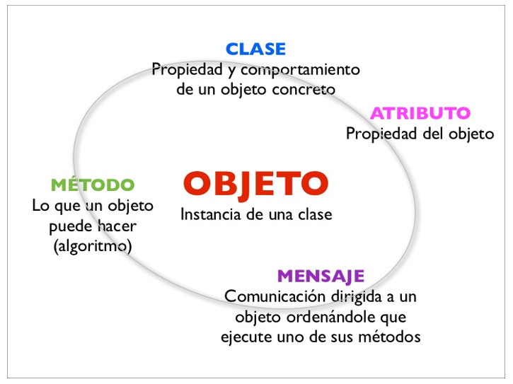

1.1. ¿Qué es una Clase y qué es un Objeto?
La relación entre una clase y un objeto es la misma que existe entre un plano arquitectónico y la casa construida a partir de él.
- Clase: Es el plano, el molde o la plantilla. Define la estructura (atributos) y los comportamientos (métodos) que tendrán los objetos de un tipo particular.
- Objeto (o Instancia): Es la casa. Una manifestación concreta y única creada a partir de una clase. Cada objeto tiene su propio estado (sus atributos tienen valores específicos), pero comparte los mismos comportamientos definidos en la clase.
